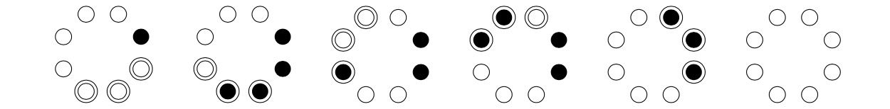

Consider $n$ coins arranged in a circle where each coin shows heads or tails. A move consists of turning over $k$ consecutive coins: tail-head or head-tail. Using a sequence of these moves the objective is to get all the coins showing heads.
Consider the example, shown below, where $n=8$ and $k=3$ and the initial state is one coin showing tails (black). The example shows a solution for this state.

For given values of $n$ and $k$ not all states are solvable. Let $F(n,k)$ be the number of states that are solvable. You are given that $F(3,2) = 4$, $F(8,3) = 256$ and $F(9,3) = 128$.
Further define: $$S(N) = \sum_{n=1}^N\sum_{k=1}^n F(n,k).$$
You are also given that $S(3) = 22$, $S(10) = 10444$ and $S(10^3) \equiv 853837042 \pmod{1\,000\,000\,007}$
Find $S(10^7)$. Give your answer modulo $1\,000\,000\,007$.